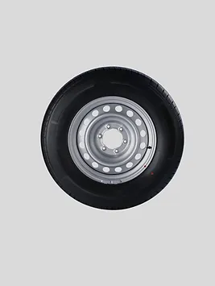

4x4

Ціна: $120
Країна: Японія
Постачальник: WHEELBU
Кількість в наявності: 110
Опис:
Шина 4x4 All-Terrain - це ідеальний вибір для тих, хто шукає надійність та високу прохідність у
будь-яких умовах. Ці шини спеціально розроблені для вантажівок, великих SUV та позашляховиків, щоб
забезпечити оптимальне сприйняття дороги, незалежно від типу покриття.
Особливості:
Прохідність в усіх умовах: Завдяки своїй спеціальній конструкції та глибокому протектору, ці
шини забезпечують надійне утримання на будь-якій поверхні - будь то асфальт, грунт, пісок чи
сніг.
Стійкість до зносу: Високоякісні матеріали та технології виробництва роблять ці шини
довговічними та стійкими до зносу, що робить їх ідеальним вибором для експлуатації у важких
погодних
умовах.
Комфорт і безпека: Шина 4x4 All-Terrain забезпечує комфортне та безпечне керування
автомобілем, навіть
на нерівних дорогах або в умовах поганої погоди, завдяки своїй оптимізованій конструкції.
Характеристики:
Розмір: 265/70R16
Індекс навантаження: 112
Індекс швидкості: T
Сезонність: Універсальна (для всіх сезонів)